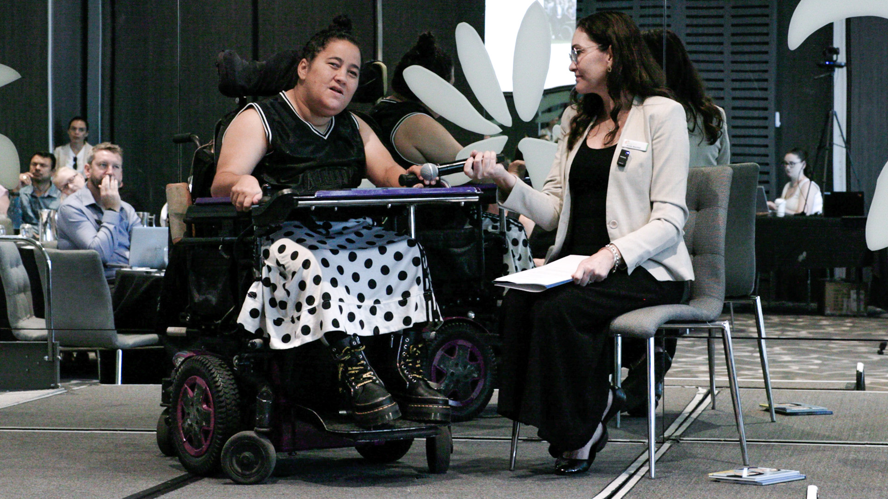
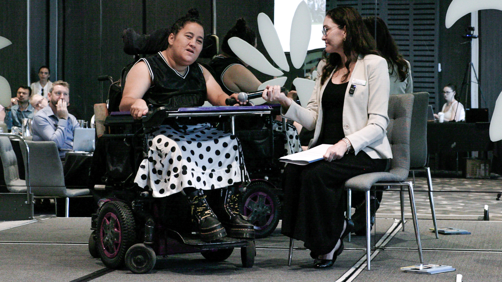

ISQ Curriculum Leaders Forum
Emporium Hotel, South Bank
21st October 2025
The final Curriculum Leaders Forum for 2025 brought educators together to explore how we can enable all learners to thrive. The keynote by Dr Amy Berry focused on student engagement — showing how teachers can help learners move from passive participation to taking ownership of their learning.
The event also featured an inspiring interview with Marlena Katene, who shared her lived experience and insights into inclusion, empowerment, and supporting every learner to participate fully.
Together, these sessions highlighted practical, evidence-informed approaches that help students build confidence, curiosity, and a genuine love of learning.
 
